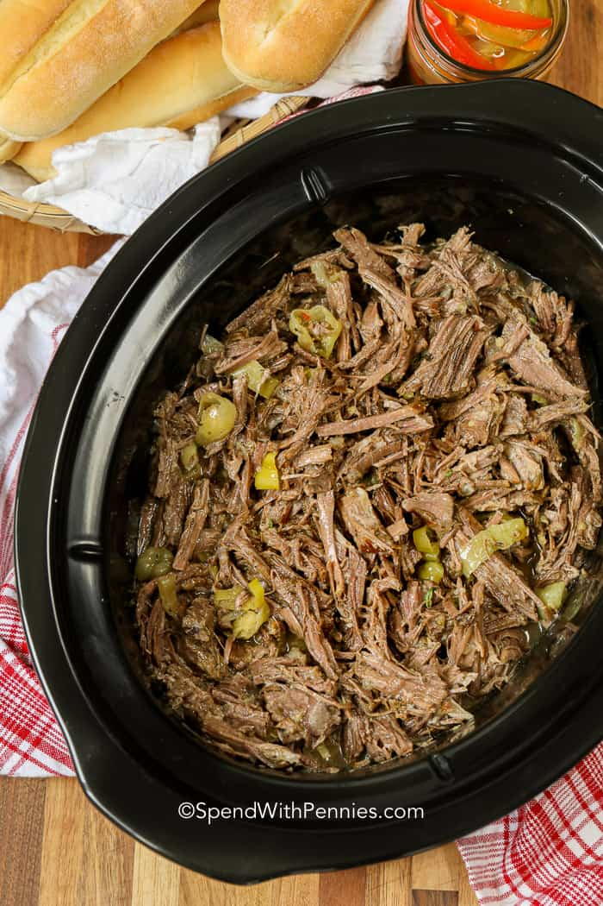

Italian Beef

Description
This is an easy recipe that can feed the family for days. It is made in a
crock pot and is very easy. It requires few ingredients yet is bursting
with flavor.
Ingedients
- 3-4 pound chuck roast
- 1 packet italian dressing mix
- 1 jar pepperoncini
Steps
- Set up crockpot on low heat.
- Trim fat from roast and set in pot.
- Pour italian seasoning on top.
- Pour jar of pepperoncini on top.
- Add water until roast is almost covered.
- Cover and cook on low for 12 hrs.
- Shred roast and serve on toasted sandwich rolls.
Return to main Page